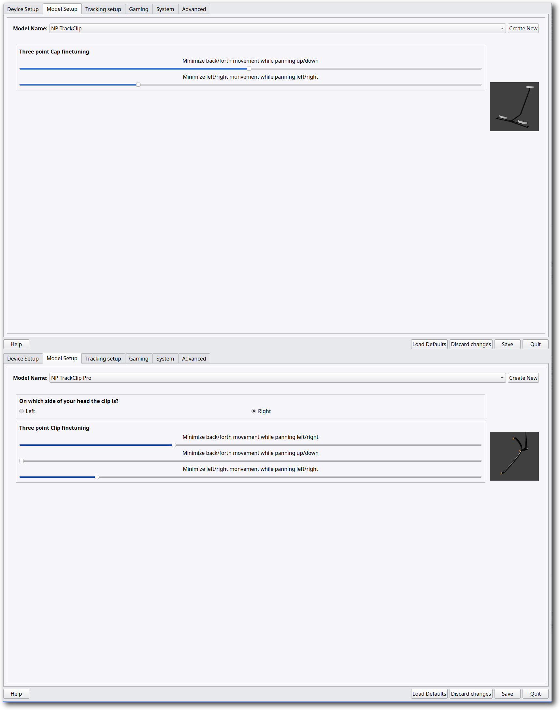

This page ties together settings that affect how your viewpoint moves beyond simple look left/right. It is especially relevant for three-point Cap and three-point Clip models. Single-point and face models do not use head-center pan tuning.
Note on naming: This page uses "three-point Cap" and "three-point Clip" in the documentation. In the LinuxTrack GUI, these appear as "3 Point Cap" and "3 Point Clip" in the Model Type dropdown (Model Setup tab). The finetuning panel title says "Three point Clip finetuning". All refer to the same model types — just different capitalization and numeral vs. spelled-out numbers.
Head-X, Head-Y, and Head-Z in the model profile (millimeters from the top reflector). You adjust it with the finetuning sliders on Model Setup. With wrong values, pure head rotation still produces unwanted slide in TX/TY/TZ — as if your eyes were glued to the tracker instead of rotating about your neck.| Topic | What you are fixing | Where to configure |
|---|---|---|
| Pan tuning (head center) | Spurious translation while you only rotate your head (yaw/pitch), because the solver assumes rotation about a neck pivot, not about the LEDs. | Model Setup finetuning sliders; tune while watching translation axes on Tracking Setup. |
| Translation/rotation alignment | How deliberate lean (TX/TY/TZ) is interpreted when you are already looking off-center — in head-local axes (relative) or fixed camera/room axes (absolute). | System tab → Disable translation/rotation alignment. |
Changing pan tuning does not replace alignment, and vice versa.
Cap models expose two sliders (no lateral Head-X; the cap is treated as centered on your head). When you create a new Cap model, defaults are typically Head-Y = 160 mm and Head-Z = 50 mm — starting points only; tune for your anatomy and cap geometry.
| Slider (UI label) | While you test | Watch on Tracking Setup |
|---|---|---|
| First — minimize back/forth while panning up/down | Pitch only (look up/down) | Z Translation graph and Pose maps |
| Second — minimize left/right while panning left/right | Yaw only (look left/right) | X Translation graph and Pose maps |
Procedure (halving the interval, dead zones): Model Setup → Model Tweaking.
|
Figure: Three point Cap finetuning on the Model Setup tab — Three point Cap finetuning panel with Head-Y and Head-Z sliders. |

Clip models add a third slider and Head-X (clip on left or right). See Model Setup for the Clip walkthrough.
Stored globally as Align-translations (yes = relative, default when unset).
Many games use only yaw, pitch, and roll and ignore translation — then alignment barely matters. It matters when the sim or middleware uses X/Y/Z translation (6DOF cockpit, some racing rigs, custom bindings). Quick test: look ~90° off center and lean toward the screen; toggle the checkbox and see whether slide stays room-fixed or follows your gaze.
Details: Tracking Setup → Diagnostics.
The Advanced tab ltr_udp bridge sends pose in OpenTrack packet form. Pan tuning and profile curves still shape the pose LinuxTrack computes; the System alignment option applies in the tracker pipeline before output. Games that only consume UDP do not change how you tune head center — they only change how you connect.